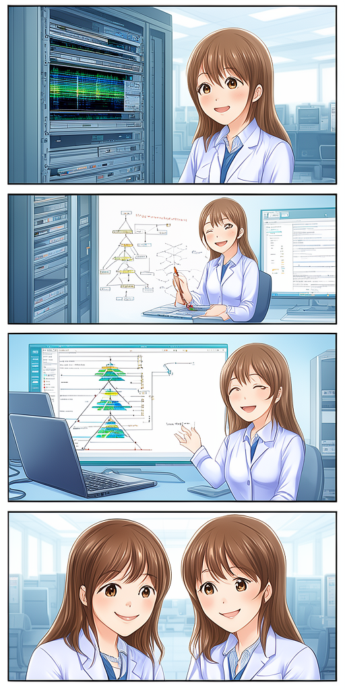

#96🏛️ 情報理工学部・情報科学科 ／ 情報理論・符号化通信数理研究室
曖昧さを測るサイコロの目――シャノン情報エントロピーと符号化定理の数理
🔬 情報とは何かを確率変数と対数の期待値（エントロピー H = -∑ p log p）として数学的に定式化し、曖昧さの解消量として捉えるシャノン情報理論（1948年）と、ハフマン符号化に代表される可逆圧縮の限界（情報源符号化定理）
【パターン1：日常の謎・トラブル解決（名探偵型）】校内サーバのバックアップ容量が突如逼迫し、生徒会や部活動のデータ転送が遅延する謎のトラブルが発生。結衣は「画像もログも全部 zip で圧縮すれば一瞬で小さくなるはずなのに、なぜかファイルによって全くサイズが減らないものがある」という不可解な現象に首を傾げて澪助教の研究室へ相談に訪れる。澪助教から「それは圧縮ソフトの不具合ではなく、そのデータが持っている『情報の曖昧さ（エントロピー）』が原因だよ」と教えられ、20の質問ゲームや偏ったサイコロの例えでシャノンの公式 H(X) = -∑ p log₂ p を導く。一見規則的に見えて実はランダムノイズの混入した巨大計測データが原因だと突き止め、ハフマン符号化の最適木構造を用いて通信路をすっきりと復旧させる。